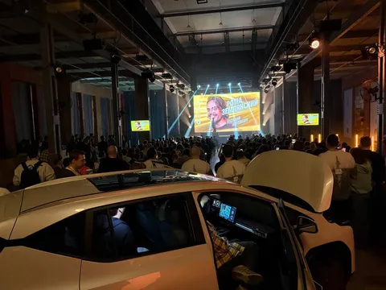

В субботу (и даже кусочком - в воскресенье) прошла флагманская конференция бизнес-группы Городских сервисов Яндекса Day&Night. И, кажется, прошла очень классно.
На главной сцене конференцию открыл сео такси Саша Аникин. Он рассказал, как меняются города под влиянием технологий и наших технологичных сервисов. Серьезно - если вспомнить наш городской быт хотя бы 15 лет назад, станет понятно, что все изменилось до неузнаваемости - столько задач теперь решается нажатием на кнопку. А что дальше - полная цифровизация транспорта и услуг, роботы и вообще светлое будущее. Мы в него верим. Мы его делаем.
Дальше разбрелись по клубам - зоны по интересам с разными форматами, от докладов и дискуссий до дебатов и олимпиадного программирования. Надеюсь, каждый нашел себе клуб по душе. А я провел добрую половину времени рядом с демонстрационным экземпляром UMO 5. Я просто был рядом, люди по фирменной футболке опознали во мне сотрудника Яндекса, и начали задавать вопросы про Умку. А я ж знаю ответы. Я ж отвечу. Меня ж не заткнуть, когда разговор заходит про машины. Вот я там и застрял на полдня. Надеюсь, ребята из Яндекс Электро не против, что я отобрал у них чуть хлеба.
Закрывали официальную часть мероприятия докладом, собственно, про Умку - Миша и Леша рассказали, с какими трудностями столкнулись при разработке авто и его голосового управления. Cloud-to-cloud интеграции через китайский VPN, распознавание звука в городском шуме и прочие приколы, которые сначала кажутся "вроде изян", а выливаются в месяцы кропотливой работы. Не знаю, будет ли запись, но если найдете - рекомендую глянуть.
Перешли в ночь - и пошел лютый нетворкинг, с фуршетом и сеньорными ребятами. Было круто, аудитория - восторг. Это надо повторить. Хотя бы в каком-то другом формате. Например, в формате Сеньёрного разговора. Среди инфоповодов конфы даже слегка затерялся анонс нашего нового сезона Сеньёрного разговора - формата, когда вы можете через бота найти себе собеседника из числа экспертов Городских сервисов Яндекса и поболтать с ним по зуму в удобный слот - про опыт, проекты, технологии или что угодно, что вам интересно. Я тоже есть в числе потенциальных собеседников. И мне разрешили вам тоже тут рассказать про этот формат, так что если есть желание - переходите в бота https://t.me/seniortalks_bot и сеньёрно общайтесь с нами.
